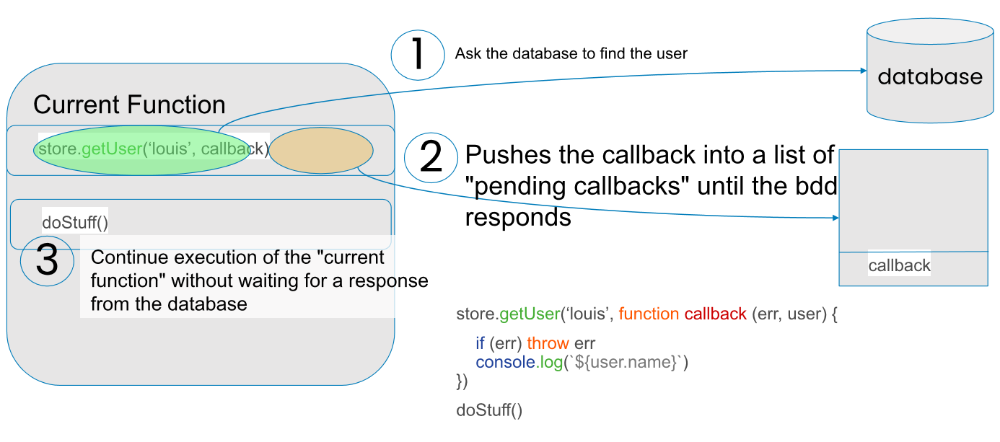
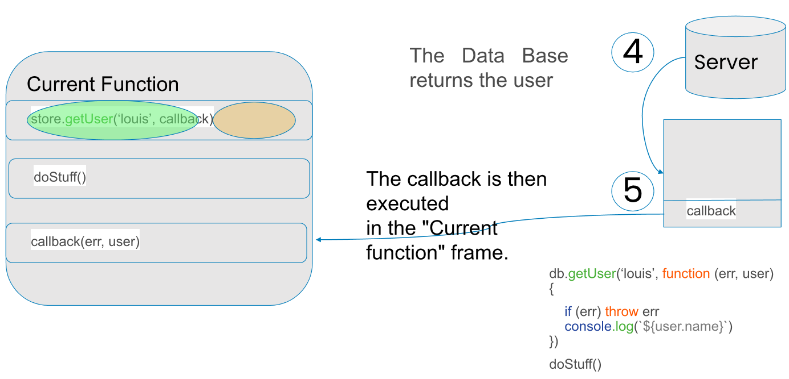

Chapter 6: Authentication and database (security, data persistence)
Table of contents
- Authentication: user registration, hash with bcrypt
- Connecting a MySQL database to a Node.js application
- Executing SQL queries on a MySQL database with NodeJS
- Using a MySQL database in NodeJS with Sequelize
some concepts to know before you start


→ You can pass "stringified json" to "body".
→ To analyze the search result, you need to transform it with response.json().
The async and await keywords are features introduced in ECMAScript 2017 (ES8) to facilitate promise management and make asynchronous code more readable and easier to understand. They are often used in conjunction with promises to simplify the syntax of asynchronous operations.
async:
The async keyword is used to declare an asynchronous function. A function declared with async always returns a promise. Within an async function, you can use the await keyword to suspend execution of the function until a promise is resolved, and return the resolved value of the promise.
- Using fetch with await and async is cleaner
Axios is a module designed to simplify web requests
-
Axios is a promise-based HTTP client designed for Node.js and the browser designed to simplify web requests
-
With Axios, we can easily send asynchronous HTTP requests to REST APIs and perform create, read, update and delete operations.
-
It's an open source collaboration project hosted on Github.
-
You install it by running the following command:
npm install axios -
Lorsque nous envoyons une requête à l’API à l’aide d’axios, elle renvoie une réponse. L’objet de réponse se compose de :
- data : les données renvoyées par le serveur.
- status : le code HTTP renvoyé par le serveur.
- statusText : le statut HTTP renvoyé par le serveur.
- headers : en- têtes obtenus du serveur.
- config : la configuration de la requête d’origine.
- request : l’objet de la requête
- data : les données renvoyées par le serveur.
Example:
Authentication: user registration, hash with bcrypt
The purpose of authentication is to be able to know who is a user
-
The purpose of authorization is to:
-
authorize or deny an action
-
log who initiated the action
-
First and foremost: NEVER store a password in clear text in a database
-
plaintext = readable, without having passed through a hash mechanism
-
Authentication to a web site involves sessions, which work thanks to cookies stored on the user's computer
-
When the user enters his login and password, it is verified that he is a user. login and password are identical
-
If necessary, we associate the user id with the session:
req.session.userId = user.id
- When the user registers, we check that no other user has the same e-mail address, to avoid collisions.
- Next, we hash the password, generally using the bcrypt module
- We store the email and password in their hashed form in the database
- When the user logs in, we retrieve the entry in the database with the identical email address
- Next, we use the function bcrypt.compare(mdpForm, mdpHashéEnBDD)
- This asynchronous function returns true if the two passwords are identical, false otherwise:
-
A hash function is a special function that calculates a digital fingerprint from input data, which is used to quickly identify the initial data, in the same way as a signature is used to identify a person. Hash functions are used in computing and cryptography, for example, to quickly identify files or passwords.
-
When manipulating passwords, the aim is to make it as hard as possible for an attacker to steal the passwords of users
-
A password in its hashed form takes a very long time to recover.
-
With the right algorithms, such as bcrypt or argon2, the time is so long that passwords are considered "safe".
-
Paradoxically, this is one of the few areas in computing where you want the algorithm to take as long as possible to execute, even on a graphics card or dedicated circuit
-
Install dependency with NPM:
npm install bcrypt -save -
Example of password hashing
- Example of password verification :
-
Authorization consists in determining whether a particular user has access rights to a resource.
-
If you want to check that the user is logged in, simply check that the req.session.userId variable has been defined in a route
-
Similarly, if you want to check that the user has special rights, you can perform any other type of check.
-
In general, a logged-in user can have one or more profiles (simple user, administrator, etc.).
-
The user profile can be stored as a field in the User table or in a separate table (relationship 1-N)
-
You can also store the profile in the session and use it later to verify authorization.
Connecting a MySQL database to a Node.js application
-
The purpose of a database (MySQL, MariaDB, PostgreSQL, SQL Server, ...) is to enable data to be persist data, i.e. store it durably
-
The web server (in this case, Node.js), by contrast, sends the data to the client, process the information received and save it in the DB.
-
The web server can be seen as the interface between the user and the database
-
Generally speaking, the database is communicated with via SQL queries
-
Several NodeJS libraries enable you to establish a connection with a MySQL database and execute queries.Among them, the two most popular are:
✓ mysql, a basic MySQL driver for Node.js written in javascript and requiring no compilation. It's the quickest and easiest way to interact with a MySQL database in Node.
✓ Sequelize, the most popular library for using SQL-based database management systems database management systems with Node.js. It supports MySQL as well as Postgres, Microsoft SQL, MariaDB... This powerful ORM (Object-Relational Mapping) allows, among other things, the use of promises and the customization of error messages for each field.
-
To use Sequelize to interact with your MySQL database in Node, you first need to install the mysql2 driver. This is a separate driver from the mysql module, less popular than the latter, but offering some additional functionality.
✓ Install mysql2 with npm install :
npm install mysql2✓ To install Sequelize, type:
npm install sequelize✓ In your app code, initialize Sequelize with require() :
const { Sequelize}=require('sequelize')✓ In a new Sequelize object, specify the user name, username, password and MySQL database name to establish the connection:
✓ Finally, you can check that the connection has been established with authenticate():
→ This part is not required to run queries on your database✓ With the query() function, you can execute any SQL query on your database:
Practical work
- Implement http methods on the project website.
- Create and configure a database for project website.